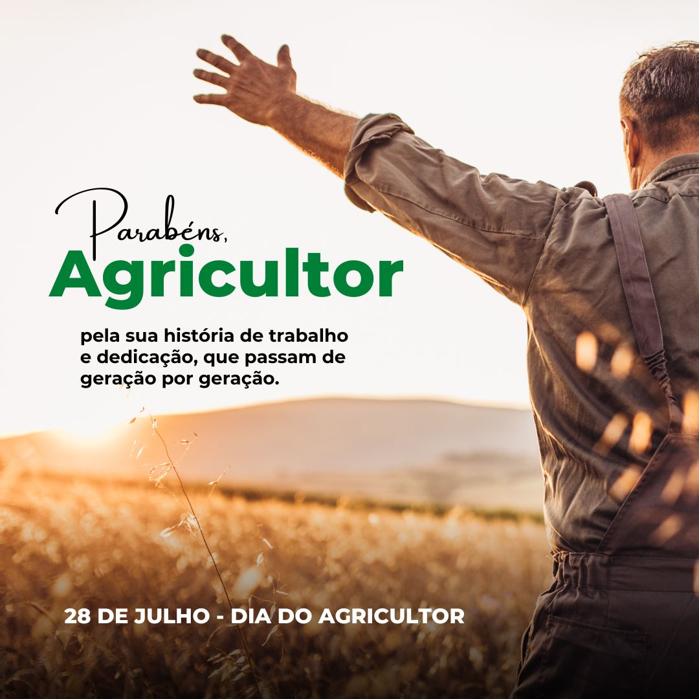

Dia do Trabalhador Rural – 28 de Julho: Uma Homenagem ao Campo.
O Dia do Trabalhador Rural, celebrado em 28 de julho, é uma data especial que reconhece e celebra a importância dos trabalhadores rurais na nossa sociedade. Esses profissionais são essenciais para a produção de alimentos e para o desenvolvimento das áreas agrícolas, desempenhando um papel fundamental na economia e no bem-estar de todos nós.
Os trabalhadores rurais são os responsáveis pela produção dos alimentos que chegam à nossa mesa.
A escolha do 28 de julho para celebrar o Dia do Trabalhador Rural tem um significado especial. Este dia foi instituído para lembrar e valorizar as contribuições contínuas desses trabalhadores e para promover a conscientização sobre suas condições de trabalho. É uma oportunidade para reconhecer os desafios enfrentados no campo e para buscar melhorias nas condições de trabalho e na qualidade de vida desses profissionais.
Apesar dos avanços tecnológicos e das melhorias na produtividade agrícola, muitos trabalhadores rurais ainda enfrentam dificuldades significativas, como a falta de acesso a serviços de saúde e educação, além de condições de trabalho muitas vezes precárias. O Dia do Trabalhador Rural serve como um momento de reflexão sobre a necessidade de políticas públicas que visem melhorar a qualidade de vida e as condições de trabalho no campo.
Parabéns a todos os trabalhadores rurais pelo seu compromisso e contribuição valiosa para a nossa sociedade. Que o seu trabalho continue a ser reconhecido e valorizado todos os dias.
